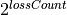

Player Class¶
The variations on Player class implementations are the heart of this application.
Each subclass can reflect different betting strategies.
In Roulette Game Class,
we roughed out a stub class for the Player class. In this chapter,
we will complete that design. We will also expand on it to implement the
Martingale betting strategy.
We have now built enough infrastructure that we can begin to add a variety of players and see how poorly each betting strategy works. Each player is a betting algorithm that we will evaluate by looking at the player’s stake to see how much they win, and how long they play before they run out of time or go broke.
We’ll look at the player problem in Roulette Player Analysis.
In Player Design we’ll expand on our previous skeleton Player
to create a more complete implementation. We’ll expand on that again
in Martingale Player Design.
In Player Deliverables we’ll enumerate the deliverables for this chapter.
Roulette Player Analysis¶
The Player class has the responsibility to create Bet instances and manage
the amount of their stake. To create Bet instances, the player must create legal
bets from known Outcome instances and stay within table limits. To
manage their stake, the player must deduct money when creating a bet,
accept winnings or pushes, report on the current value of the stake, and
leave the table when they are out of money.
We’ll look at a number of topics:
Our overall goal, in Design Objectives.
How we manage the budget, in Tracking the Stake.
How a player interacts with table limits, in Table Limits.
In Leaving the Table we’ll look at a player retiring when they’re ahead. Or broke.
In Creating Bets from Outcomes we’ll look at a technical question of transforming an
Outcomeinstance into aBetinstance.
We roughed out an interface for the player as part of the design of the :class: Game class
and the Table class. In designing the :class: Game class,
we defined a Player.placeBets() method to place all bets.
We expected the Player instance
to create Bet instances and use the Table.placeBet() method
to save all of the individual Bet instances.
In the Passenger57 Design section we defined a kind of player.
When we finish creating the final superclass, Player, we
can then revise our Passenger57 class to be a subclass of the Player class.
We should be able to rerun our unit tests to be sure that this new, more complete design
still handles the original test cases correctly.
Design Objectives¶
Our objective is to have a new abstract class, Player,
with two new concrete subclasses: a revision to the Passenger57 class
and a new player subclass that follows the Martingale betting system.
We’ll defer some of the design required to collect detailed measurements for statistical analysis. In this first release, we’ll simply place bets.
There are four design issues tied up in the Player class: tracking
stake, keeping within table limits, leaving the table, and creating
bets. We’ll tackle them in separate subsections.
Tracking the Stake¶
One of the more important features we need to add to the
Player class are the methods to track the player’s stake. The
initial value of the stake is the player’s budget. Here is a list of several
significant changes to the stake:
Each bet placed will deduct the bet amount from the
Playerobject’s stake. We are stopped from placing bets when our stake is less than the table minimum.Each win will credit the stake. The
Outcomeclass will compute this amount for thePlayerobject.Additionally, a “push” outcome will put the original bet amount back into the player’s stake. This is a kind of win with no odds applied.
We’ll have to design an interface that will create Bet objects,
reducing the stake. and will be used by :class: Game class to notify the Player
instance of the amount won.
Additionally, we will need a method to reset the stake to the starting amount. This will be used as part of data collection for the overall simulation.
Table Limits¶
Once we have our superclass, we can then define the Martingale
player as a subclass. This player doubles their bet on every loss, and
resets their bet to a base amount on every win. In the event of a long
sequence of losses, this player will have their bets rejected as over
the table limit. This raises the question of how the table limit is
represented and how conformance with the table limit is assured.
We put a preliminary design in place in Roulette Table Class. There are several places where we could isolate this responsibility.
The
Playerclass can stop placing bets when they are over the table limit. In this case, we will be delegating responsibility to thePlayerclass hierarchy. In a casino, a sign is posted on the table, and both players and casino staff enforce this rule. This can be modeled by providing a method inTableclass to return the table limit for use by thePlayerinstance to keep bets within the limit.The
Tableclass provides a “valid bet” method. This can include computing a total of all bets placed, and raise exceptions.The
Tableclass raises an “illegal bet” exception when an illegal bet is placed.
The first alternative is unpleasant because the responsibility to spread
around: both the Player and the Table classes must be aware of a feature
of the Table class. This means that a change to the Table class design will
also require a change to the Player class implementation. This is poor object-oriented
design.
The second and third choices reflect two common approaches that are summarized as:
Ask Permission. The application has code wrapped in
if permitted:conditional processing.Ask Forgiveness. The application assumes that things will work. An exception indicates something unexpected happened.
The general advice is this:
It’s easier to ask forgiveness than to ask permission.
Most of the time, validation should be handled by raising an exception. This suggests
the Table class should raise exceptions for bets which are invalid.
This includes rejecting bets which exceed the table limit.
Handling Game State. The idea of bet validation raises a question about how we handle games where some bets are not allowed during some game states.
There are two sources of validation for a bet.
The
Tableclass may reject a bet because it’s over (or under) a limit.The :class: Game class may reject a bet because it’s illegal in the current state of the game.
Since these considerations are part of Craps and Blackjack, we’ll set them aside for now. They’re side-bar considerations during the design of Roulette.
Leaving the Table¶
We need to address the issue of the player
leaving the game. We can identify a number of possible reasons for
leaving: out of money, out of time, won enough, and unwilling to place a
legal bet. Since this decision is private to the Player class,
we need a way of alerting the :class: Game instance that the Player object
is finished placing bets.
There are three mechanisms for alerting a :class: Game instance that a Player
instance is finished placing bets.
Expand the responsibilities of the
Game.placeBets()to also indicate if the player intends to play or is withdrawing from the game. While most table games require bets on each round, it is possible to step up to a table and watch play before placing a bet. This is one classic strategy for winning at blackjack: one player sits at the table, placing small bets and counting cards, while a confederate places large bets only when the deck is favorable. We really have three player conditions: watching, betting, and finished playing. It becomes complex trying to bundle all this extra responsibility into theGame.placeBets()method.Add another method to the
Playerclass, used by the :class: Game class to determine if thePlayerinstance will continue or stop playing. This can be used for a player who is placing no bets while waiting; for example, a player who is waiting for the Roulette wheel to spin red seven times in a row before betting on black.The
Playerclass can raise an exception when they are done playing. This is an odd use case for an exception. The situation occurs exactly once in each simulation, and it is a well-defined condition: it doesn’t deserve to be called “exceptional” . It is merely a terminating condition for the game.
We recommend adding a method to the Player class to indicate when the player
is finished. This gives the most flexibility, and it permits the Game class
to cycle until the player withdraws from the game.
A consequence of this decision is to rework the :class: Game class
to allow the player to exit. This is relatively small change to
interrogate the Player instance to see if they’re active
before asking them to place bets.
Note
Design Evolution
This section reveals situations we didn’t discover during
the initial design. It helped to have some experience with the
classes in order to determine the proper allocation of
responsibilities. While design walk-throughs are helpful, an
alternative is to create a “technical spike”: a piece of software that is
incomplete and can be disposed of. The earlier exercise created a
version of the Game class that was incomplete,
and a version of Passenger57 that will have to be disposed of.
Creating Bets from Outcomes¶
Generally, a Player instance will
have a few Outcome instances on which they are betting. Many
systems are similar to the Martingale system, and place bets on only one
of the many Outcome instances. These Outcome objects are
usually created during player initialization. From these Outcome instances,
the Player object can create the individual Bet
instances based on their betting strategy.
Since we’re currently using the Wheel class as a repository for all legal
Outcome instances, we’ll need to provide the Wheel class to the
Player.
This doesn’t generalize well for Craps or Blackjack. We’ll need to revisit
this design decision. In the long run, we’ll need to find another kind of factory for
creating proper Outcome instances.
We’ll design the base class of Player and a specific subclass,
Martingale. This will give us a working player that we can
test with.
Player Design¶
-
class
Player¶ Playerplaces bets in Roulette. This an abstract class, with no actual body for thePlayer.placeBets()method. However, this class does implement the basicPlayer.win()method used by all subclasses.
Fields¶
-
Player.stake The player’s current stake. Initialized to the player’s starting budget.
-
Player.roundsToGo The number of rounds left to play. Initialized by the overall simulation control to the maximum number of rounds to play. In Roulette, this is spins. In Craps, this is the number of throws of the dice, which may be a large number of quick games or a small number of long-running games. In Craps, this is the number of cards played, which may be large number of hands or small number of multi-card hands.
Constructors¶
Methods¶
-
Player.playing(self) → bool Returns
Truewhile the player is still active.
-
Player.placeBets(self) → None Updates the
Tableobject with the variousBetobjects.When designing the
Tableclass, we decided that we needed to deduct the amount of a bet from the stake when the bet is created. See the Table Roulette Table Analysis for more information.
-
Player.win(self, bet: Bet) → None - Parameters
bet (
Bet) – The bet which won
Notification from the :class: Game object that the
Betinstance was a winner. The amount of money won is available via theBet.winAmount()method.
Martingale Player Design¶
-
class
Martingale¶ Martingaleis aPlayerwho places bets in Roulette. This player doubles their bet on every loss and resets their bet to a base amount on each win.
Fields¶
-
Martingale.lossCount¶ The number of losses. This is the number of times to double the bet.
-
Martingale.betMultiple¶ The the bet multiplier, based on the number of losses. This starts at 1, and is reset to 1 on each win. It is doubled in each loss. This is always equal to .
Methods¶
-
Martingale.placeBets(self) → None¶ Updates the
Tableobject with a bet on “black”. The amount bet is , which is the value ofbetMultiple.
-
Martingale.win(self, bet: Bet) → None¶ - Parameters
bet (
Bet) – The bet which won
Uses the superclass
Player.win()method to update the stake with an amount won. This method then resetslossCountto zero, and resetsbetMultipleto1.
-
Martingale.lose(self, bet: Bet) → None¶ - Parameters
bet (
Bet) – The bet which won
Uses the superclass
Player.loss()to do whatever bookkeeping the superclass already does. IncrementslossCountby1and doublesbetMultiple.
Player Deliverables¶
There are six deliverables for this exercise. The new classes must have Python docstrings.
The
Playerabstract superclass. Since this class doesn’t have a body for theplaceBets(), it can’t be unit tested directly.A revised
Passenger57class. This version will be a proper subclass ofPlayer, but still place bets on black until the stake is exhausted. The existing unit test forPassenger57class should continue to work correctly after these changes.The
Martingalesubclass of thePlayerclass.A unit test class for the
Martingaleclass. This test should synthesize a fixed list ofOutcomeinstances,Bininstances, and calls aMartingaleinstance with various sequences of reds and blacks to assure that the bet doubles appropriately on each loss, and is reset on each win.A revised :class: Game class. This will check the player’s
playing()method before callingplaceBets()method, and do nothing if the player withdraws. It will also call the player’swin()andloss()methods for winning and losing bets.A unit test class for the revised :class: Game class. Using a non-random generator for
Wheelinstance, this should be able to confirm correct operation of the :class: Game class for a number of bets.
Looking Forward¶
Now that we have working Table, Game, and Player classes, we have
two fundamental choices. One option is to build more subclass of the Player class.
The other choice is to put an overall simulation wrapper around the work done so far.
Building the overall simulation control allows us to deliver a small, working example before investing time in building more sophisticated features. This is a very helpful next step, so the next chapter will look at overall simulation control.